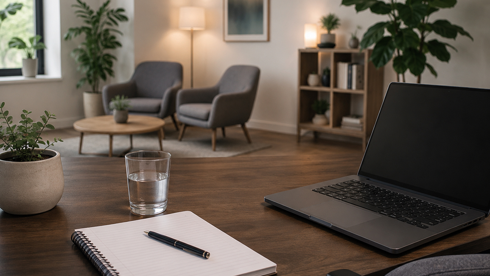

- 21 марта 2026
- Время чтения: 5 минут
Как проходит первая смена в K-MODELS
Первая смена обычно кажется самым сложным шагом. На деле всё проще: тебя встречает администратор, показывает студию, объясняет базовые правила и помогает спокойно войти в процесс.
В K-MODELS не ждут, что ты сразу всё умеешь. Многие приходят без опыта. Поэтому первый день строится не вокруг давления, а вокруг адаптации: познакомиться с пространством, понять график, разобраться с техникой и задать все вопросы.
Что происходит в первый день
Первая смена обычно кажется самым сложным шагом. На деле всё проще: тебя встречает администратор, показывает студию, объясняет базовые правила и помогает спокойно войти в процесс. В K-MODELS не ждут, что ты сразу всё умеешь. Многие приходят без опыта. Поэтому первый день строится не вокруг давления, а вокруг адаптации: познакомиться с пространством, понять график, разобраться с техникой и задать все вопросы.

Нужно ли готовиться заранее
Специальной подготовки не требуется. Достаточно прийти вовремя, быть на связи и настроиться на новый формат работы. Команда помогает с базовыми моментами: от внешнего образа до понимания платформы и поведения на смене. Всё объясняют по шагам, без сложных терминов и лишнего стресса.